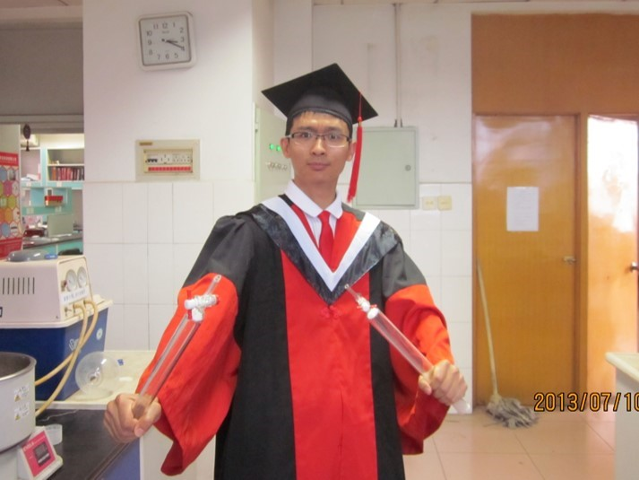
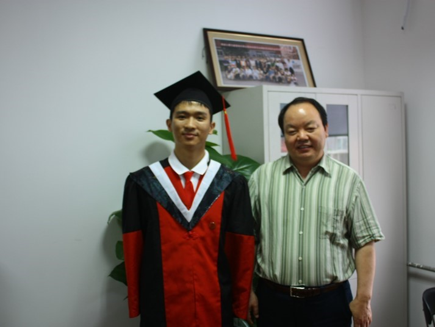
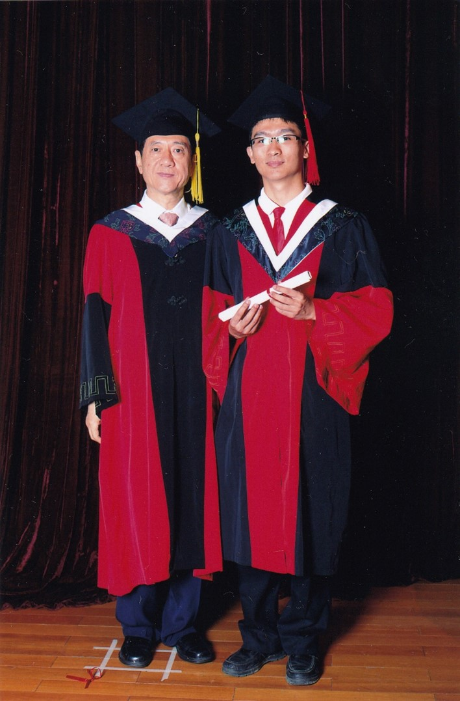
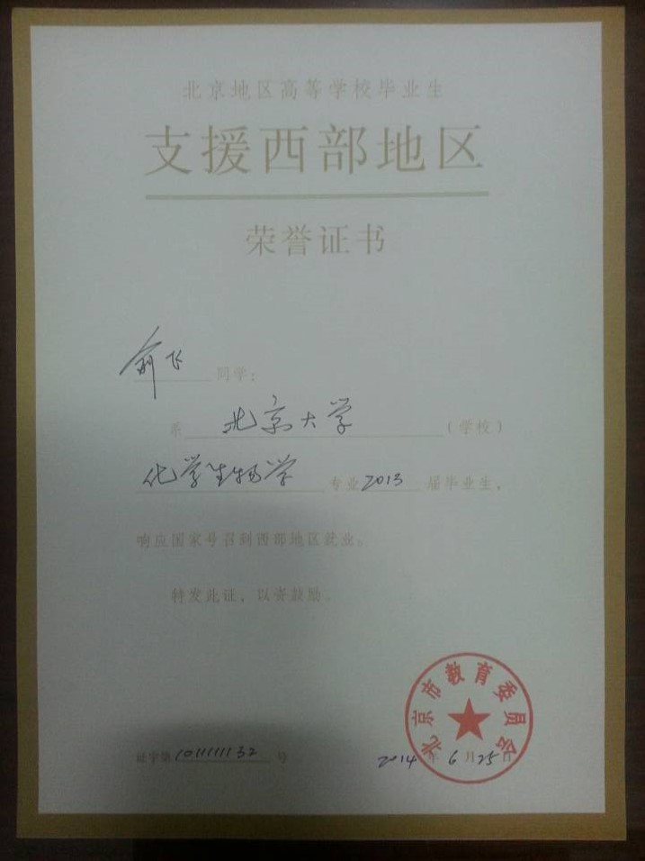
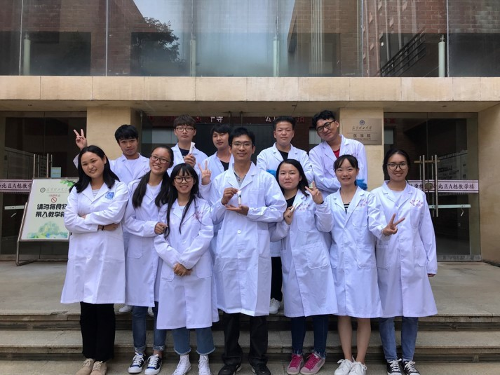
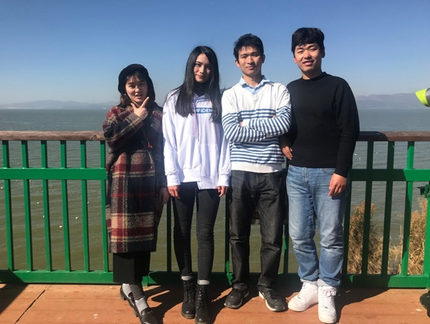
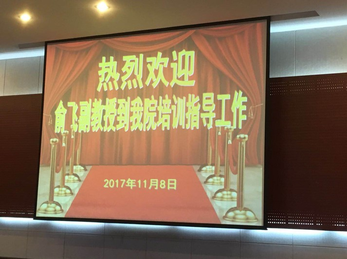
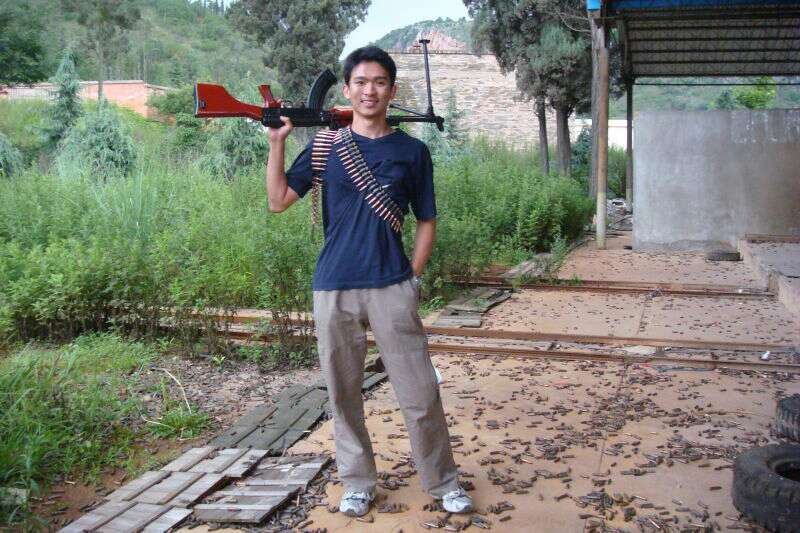

课题组成员
俞 飞 博士（2010-2013）

E-mail: feiyuz8@163.com
毕业去向
昆明理工大学【副教授，硕士生导师】
教育经历
2010.09 – 2013.07 北京大学，化学生物学，博士，导师：周德敏 教授
2008.09 – 2010.07 北京大学，药物化学， 硕士，导师：杨铭 教授
2004.09 – 2008.07 北京大学，药学专业，本科
研究方向
五环三萜抗病毒药物研究
蛋白药物的非天然氨基酸定点修饰研究
科研基金
（1） 国家自然科学基金地区项目（主持）：以齐墩果酸为先导物的流感病毒进入抑制剂研究（NO.81560560，2016-2019）
（2） 云南省应用基础研究计划面上项目（主持）：基于非天然氨基酸及生物正交断裂技术的可控释放性长效干扰素研究（NO.2018FB145，2018-2021）
（3） 云南省应用基础研究计划青年项目（主持）：以“病毒进入细胞”为靶的五环三萜抗流感病毒药物研究（NO.2015FD012）
代表性论文
(1) L Meng; Q Wang; T Tang; S Xiao; L Zhang; D Zhou; F Yu*. Design, Synthesis and Biological Evaluation of Pentacyclic Triterpene Dimers as HCV Entry Inhibitors. Chinese Journal of Chemistry 2017, 35, 1322-1328.
(2). F Yu; X Zheng; Y Peng; D Zhou; S Xiao. Design and Synthesis of Oleanolic Acid Rings A and C Lactone Derivatives. Chinese Journal of Organic Chemistry 2016, 36, 512-519.
(3). F Yu; Q Wang; H Wang; L Si; J Liu; X Han; S Xiao; L Zhang; D Zhou. Synthesis and biological evaluation of echinocystic acid derivatives as HCV entry inhibitors. Chinese Chemical Letters 2016, 27, 711–713.
(4). H Wang;# F Yu; Y Peng;# Q Wang; X Han; R Xu; X Zhou; C Wan; Z Fan; P Jiao; Y Zhang; L Zhang; D Zhou; S Xiao. Synthesis and biological evaluation of ring A and/or C expansion and opening echinocystic acid derivatives for anti-HCV entry inhibitors. European Journal of Medicinal Chemistry 2015, 102, 594-599.
(5). F Yu; Y Peng; Q Wang; Y Shi; S Xiao; C Zhang; M Yu; Y Zheng; L Zhang; D Zhou. Potent Bivalent Pentacyclic Triterpenes as a New Class of HCV Entry Inhibitors. European Journal of Medicinal Chemistry 2014, 77, 258-268.
(6). F Yu; Q Wang; Z Zhang; Y Peng; Y Qiu; Y Shi; Y Zheng; S Xiao; H Wang; X Huang; L Zhu; K Chen; C Zhao; C Zhang; M Yu; D Sun; L Zhang; D Zhou. Development of triterpenes as a new class of HCV entry inhibitors. Journal of Medicinal Chemistry 2013, 56, 4300-4319.
(7) S Xiao;# Q Wang;# F Yu;# Y Peng; M Yang; M Sollogoub; P Sina?; Y Zhang; L Zhang; D Zhou. Conjugation of cyclodextrin with fullerene as a new class of HCV entry inhibitors. Bioorganic & Medicinal Chemistry 2012, 20, 5616-5622.
(8). F Yu; R Pang; D Yuan; M He; C Zhang; S Chen; M Yang. Design, synthesis, and biological evaluation of novel substituted [1,2,3]triazolo[4,5-d]pyrimidines as HIV-1 Tat-TAR interaction inhibitors. Pure & Applied Chemistry 2010, 82, 339-347.
(9). M Yu; L Si; Y Wang; Y Wu; F Yu; P Jiao; Y Shi; H Wang; S Xiao; G Fu; K Tian; Y Wang; Z Guo; X Ye; L Zhang; D Zhou. Discovery of Pentacyclic Triterpenoids as Potential Entry Inhibitors of Influenza Viruses. Journal of Medicinal Chemistry 2014, 57, 10058-10071.
(10). S Xiao ; M Yang; F Yu; L Zhang; D Zhou; P Sina?; Y Zhang. Synthesis of four mono-functionalized α-cyclodextrin derivatives for further confirming DIBAL-H-promoted bis-de-O-methylation mechanism., Tetrahedron, 2013, 69, 4053-4060.
(11). Y Zheng; F Yu; Y Wu; L Si; H Xu; C Zhang; Q Xia; S Xiao; Q Wang; Q He; P Chen; J Wang; L Zhang; K Taira; D Zhou. Broadening the versatility of lentiviral vectors as a tool in nucleic acid research via genetic code expansion. Nucleic Acids Research 2015, 43, e73.
(12). H Wang; Q Wang; S Xiao; F Yu; M Ye; Y Zheng; C Zhao; D Sun; L Zhang; D Zhou. Elucidation of the pharmacophore of echinocystic acid, a new lead for blocking HCV entry. European Journal of Medicinal Chemistry 2013, 64, 160-168.
(13). S Xiao; D Zhou; M Yang; F Yu; L Zhang; P Sina?; Y Zhang. Synthesis of two mono-deoxy β-cyclodextrin derivatives as useful tools for confirming DIBAL-H promoted bis-de-O-methylation mechanism. Chinese Chemical Letters 2012, 23, 1315-1318.
(14). Z Zhang; Han W; L Du; K Chen; S Xiao; F Yu; L Zhang; D Zhou. Discovery and development of antiviral drugs. Journal of Chinese Pharmaceutical Sciences 2010, 19, 409-422.
(15). K Chen; Z Tan; M He; J Li; S Tang; I Hewlett; F Yu; Y Jin; M Yang. Structure-activity relationships (SAR) research of thiourea derivatives as dual inhibitors targeting both HIV-1 capsid and human cyclophilin A. Chemical Biology & Drug Design 2010, 76, 25-33.
(16). M Yang; M He; R Pang; C Zhang; F Yu; S Chen; X Yu. A novel quantitative bioassay for newly synthesized compounds as HIV-1 Tat-TAR RNA interaction inhibitors. Journal of Biotechnology 2008, 136, S75.
申请专利
1. 201110171781.7 定点突变和定点修饰的生长激素、其制备方法及其应用 发明人：周德敏、张传领、肖苏龙、张雨帆、俞飞、赵传科、陈景贤、张礼和
2. 201110373224.3 三萜衍生物，其制备方法和用途 发明人：周德敏、肖苏龙、张镇、俞飞、王晗、王琪、彭逸云、张礼和
3. 201210402726.9 三萜衍生物及其抗流感用途 发明人：周德敏、于茂荣、肖苏龙、俞飞、彭逸云、邱允俨、张礼和
4. 201210214038.X 定点突变和定点修饰的病毒膜蛋白、其制备方法及其应用 发明人：周德敏、郑永祥、赵传科、张传领、俞飞、肖苏龙、张礼和
5. 201310128367.7 非天然氨基酸标记的目的蛋白或肽的制备 发明人：周德敏、陈景贤、张博、俞飞、张传领、司龙龙







